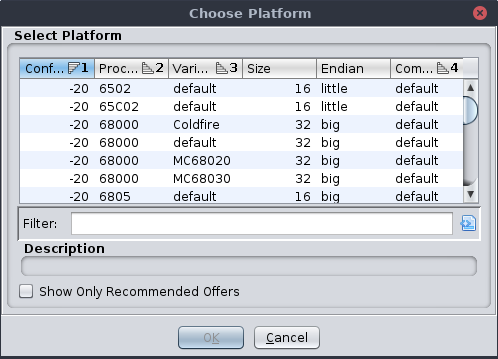

The Debugger allows the user to work with multiple platforms, i.e., architectures, compilers, etc., within the context of a single debug target. This plugin allows the user to switch among platforms and/or introduce new platforms via overrides.
Note we are in a transitional period between two trace database conventions. This plugin is a necessary component when working with the new convention. In the legacy convention, the system must ascertain the target's language and compiler at the time it begins recording. If it fails or makes an incorrect decision, the UI remains mostly empty, or worse, the system interrogates and instructs the target using the wrong architecture. This mode still works in most circumstances and is the default and recommended convention. Additional platforms can still be introduced, but there is perhaps little use for doing so. One case might be to, e.g., disassemble JVM bytecodes when debugging a Java process at the native level.
In the new convention, the system always records the target, using the "DATA" language, i.e., no language. The object tree is recorded, and objects with memory are assigned overlay spaces where their contents are recorded. The only way to disassemble instructions is to add a guest platform. This plugin will do that automatically, in more or less the same fashion as the language and compiler are ascertained in legacy mode. If this fails, the recording still proceeds, and most of the UI is still useful. The user can add (perhaps by trial and error) the correct platform later. In the meantime, memory, registers, threads, etc., are all still displayed.
This plugin adds actions into the Debugger menu under "Choose Platform."
This action adds or changes to a specific platform in the current trace. One of these actions is presented for each recommended or previously chosen platform, if any. The recommendations are given by an opinion service, so new options may be added by extension modules. It is possible there are no recommendations for the current trace. The current platform is designated by a check mark or other selection indicator.
This action is enabled whenever there is a current trace. It presents a dialog with the recommended platforms for the trace.
|  |
The "Show Only Recommended Offers" check can be disabled to display override offers as well. Selecting an offer and confirming the dialog will add or change to the selected platform in the trace. Furthermore, the choice will be added to the "Choose Platform" menu until the trace is closed.